10/09/2023 — Hãy tự đánh giá cách xử trí bệnh nhân này với chẩn đoán “NSTEMI, bệnh nhiều nhánh mạch vành”
Bản dịch tiếng Việt của bài "Judge for yourself the management of this patient with “NSTEMI, multivessel disease”" – Dr. Smith’s ECG Blog. Giữ nguyên toàn bộ 12 hình ảnh của bản gốc.
Gửi bởi một người giấu tên, biên tập bởi Pendell Meyers
Một người đàn ông ở độ tuổi 50, tiền sử chỉ có tăng huyết áp, đến viện vì đau ngực cấp bắt đầu 45 phút trước khi nhập viện, lúc đang làm vườn. Cơn đau lan ra cả hai vai và cả hai chi trên, kèm khó thở và vã mồ hôi. Ông cho biết đã làm nghiệm pháp gắng sức bình thường cách đây vài năm.
Điện tâm đồ lúc phân loại (triage) (không có điện tâm đồ cũ để so sánh):

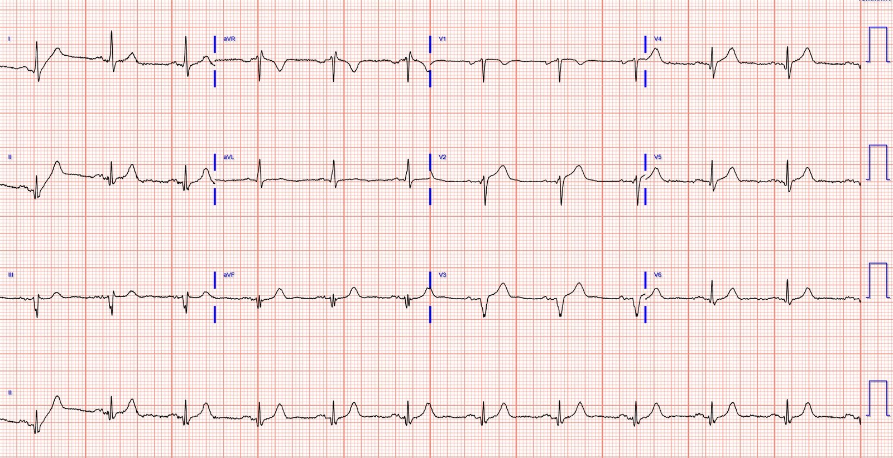
Meyers: Có ST chênh lên (STE) ở V2-V4, không thể coi là bình thường vì có sóng Q ở V3, sóng R giảm biên độ (thoái triển) từ V2 sang V3, và nhiều khả năng có sóng T tối cấp ở V2-V4. Sóng T ở các chuyển đạo dưới cũng nhiều khả năng bất thường, nhưng với tôi thì chưa đủ để chẩn đoán khi không có điện tâm đồ cũ để so sánh.
Tôi nhắn tin điện tâm đồ này, không kèm thông tin gì, cho Dr. Smith, và ông lập tức trả lời:
“Nếu có đau ngực (CP), thì là OMI thành trước cho đến khi chứng minh được điều ngược lại.”
Sau đó tôi gửi nó cho bot AI Queen of Hearts để chẩn đoán OMI cấp (một mạng nơ-ron tích chập sâu do Powerful Medical, còn gọi là PMCardio, tạo ra, và được Smith và Meyers huấn luyện)
Đây là kết quả đọc của QOH:

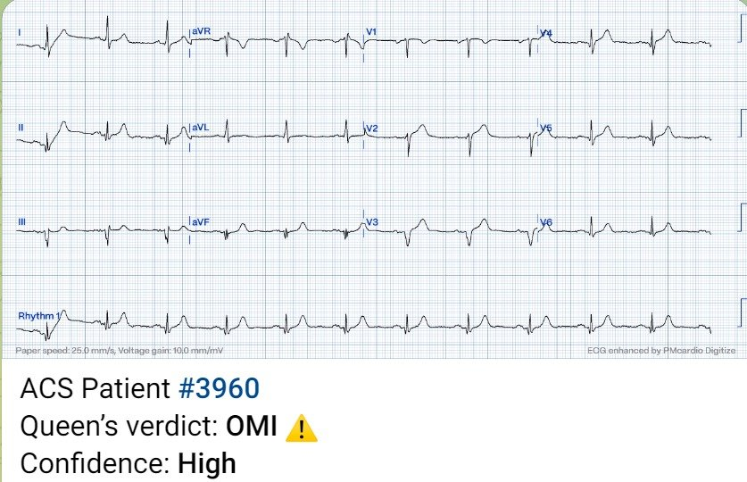
Dưới đây bạn có thể thấy một số chức năng mới của AI mà chúng tôi đang phát triển: phân tích theo từng chuyển đạo về khả năng có OMI ở mỗi chuyển đạo, và tô sáng theo đúng thời điểm các đặc điểm mà AI đánh giá là quan trọng nhất cho chẩn đoán mà nó đưa ra:

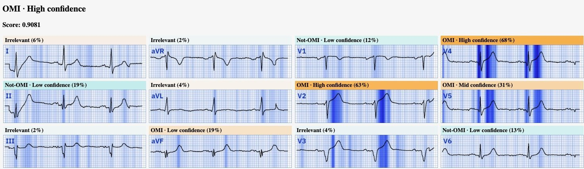
Theo những gì tôi biết, không có hành động nào được thực hiện dựa trên điện tâm đồ này.
Troponin I độ nhạy cao ban đầu = dưới 6 ng/L.
Troponin lần hai 19 ng/L.
Điện tâm đồ ghi lại:

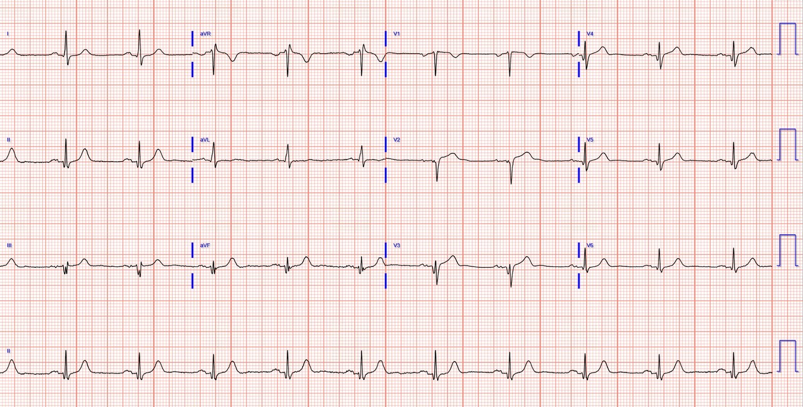

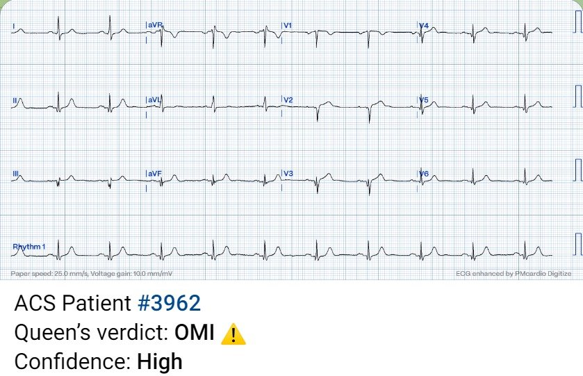

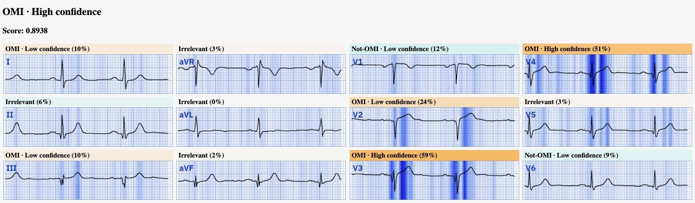
CT động mạch chủ âm tính với bóc tách.
Troponin lặp lại 150 ng/L.
Chuyển đến trung tâm có PCI.
Được xem là “NSTEMI.” Mọi ghi chép đều ghi nhận đau đang tiếp diễn, nhưng sau truyền nitroglycerin liên tục và morphine khi cần, “đau giảm còn 2/10.”
Troponin lặp lại 436 ng/L.
Mọi ghi chép đều viết “không có thay đổi thiếu máu cục bộ trên điện tâm đồ.”
Ngày 2:
Không ghi điện tâm đồ nào.
Các lần troponin lặp lại:
1.668
6.499
lớn hơn 25.000
(không chỉ định thêm lần nào nữa)
Siêu âm tim:
EF 35%. Giảm động nặng vùng cơ tim trước vách đoạn giữa-mỏm, thành trước, thành trước bên và mỏm.
Ngày 3: ngày này không ghi chép được gì nhiều
Không ghi điện tâm đồ nào.
Ngày 4:
Thông tim:
“Bệnh ba nhánh mạch vành đáng kể trên chụp mạch. Tổn thương thủ phạm là một chỗ hẹp vôi hóa phức tạp ở LAD đoạn giữa, liên quan đến nhánh chéo thứ nhất và thứ hai. Ghi nhận huyết khối đáng kể. Tiếp tục điều trị nội khoa. Chuyển phẫu thuật bắc cầu chủ vành (CABG) với LIMA vào LAD và SVG vào AL1, nhánh trung gian (ramus) và OM2.”
Báo cáo không ghi dòng chảy TIMI.
Bệnh ở các nhánh mạch khác gồm LCX 75% đoạn giữa và đoạn xa, RPDA 75%.
Điện tâm đồ sau thông tim:

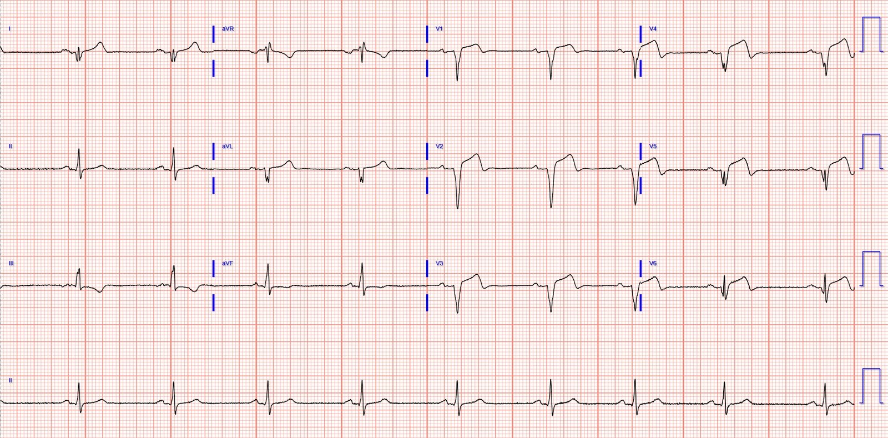

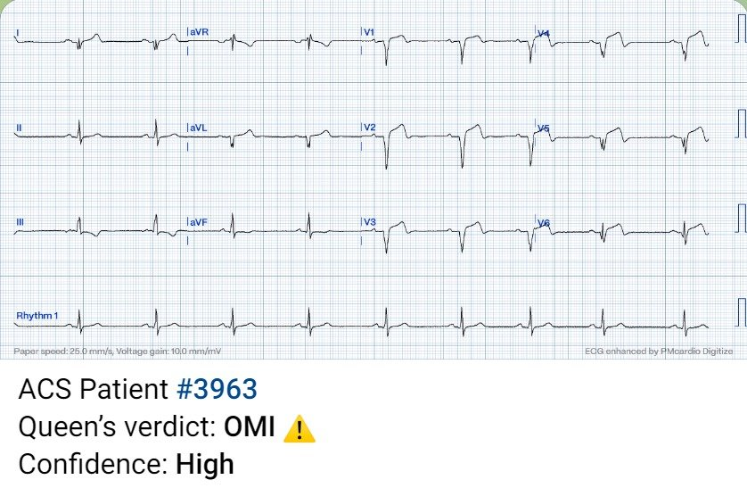
Ngày 6: đã làm CABGx4, gồm cầu nối LIMA vào LAD
Điện tâm đồ sau CABG:

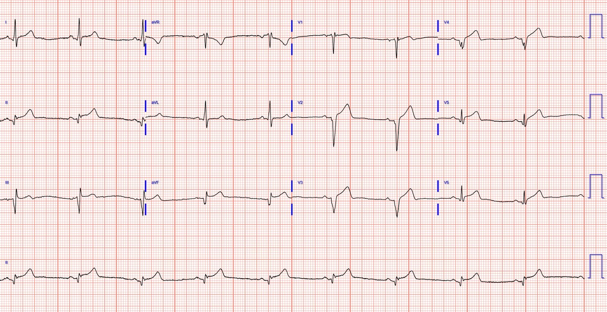
Bản ghi này cho thấy ST chênh lên dai dẳng và sóng T tối cấp.
Điện tâm đồ ngày 12:

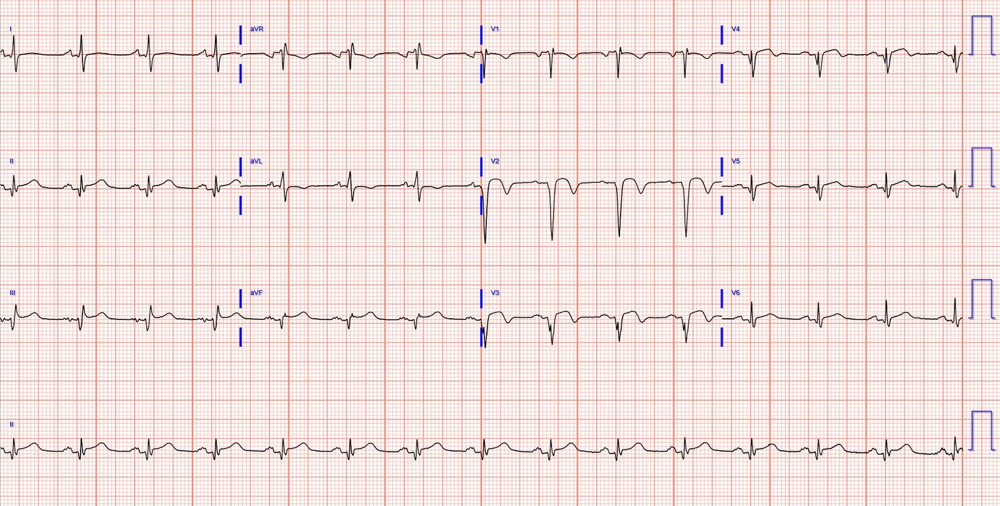
CHẨN ĐOÁN CUỐI CÙNG: “NSTEMI”
Mặc dù điện tâm đồ ngày 4 dễ dàng đạt tiêu chuẩn STEMI, bệnh nhân vẫn được chẩn đoán là NSTEMI. Không ai xem xét lại ca bệnh để bảo đảm chẩn đoán “NSTEMI” giả tạo kia là đúng. Ca bệnh không được đưa ra rà soát đảm bảo chất lượng vì việc đó chỉ được thực hiện cho bệnh nhân STEMI.
Trong năm đầu tiên sau khi ra viện, ông đã phải nhập viện 3 lần vì suy tim sung huyết (CHF).
Kết cục lâu dài chưa rõ nhưng rõ ràng là ảm đạm.
Điểm cần học cuối cùng:
Morphine không bao giờ nên được cho cho đến khi bạn đã quyết định đưa bệnh nhân đến phòng thông tim (cath lab). Nó khiến bạn nghĩ rằng mình đã làm được điều gì đó cho tình trạng thiếu máu cục bộ, trong khi thực ra bạn chưa làm gì cả!
Tài liệu tham khảo:
1)
Xem nghiên cứu này cho thấy mối liên quan giữa morphine và tử vong trong hội chứng vành cấp không ST chênh lên (Non-STE-ACS):
Meine TJ, Roe M, Chen A, Patel M, Washam J, Ohman E, Peacock W, Pollack C, Gibler W, Peterson E. Association of intravenous morphine use and outcomes in acute coronary syndromes: Results from the CRUSADE Quality Improvement Initiative (Mối liên quan giữa việc dùng morphine tĩnh mạch và kết cục trong hội chứng vành cấp: kết quả từ Sáng kiến Cải tiến Chất lượng CRUSADE). Am Heart J. 2005;149:1043–1049.
2)
Việc dùng morphine trong hội chứng vành cấp không ST chênh lên (Non-STE-ACS) liên quan độc lập với tử vong, với tỷ số chênh (odds ratio) là 1,4
http://prdupl02.ynet.co.il/ForumFiles_2/14835373.pdf
Bracey, A. Meyers HP. Smith SW.
Wei L. Singer DD. Singer A. Association between opioid analgesia
and delays to cardiac catheterization of patients with occlusion Myocardial
Infarctions (Mối liên quan giữa giảm đau bằng opioid và sự chậm trễ thông tim ở bệnh nhân nhồi máu cơ tim do tắc). Academic Emergency Medicine 27(S1): S220; tháng Năm 2020. Tóm tắt 556.
MỤC TIÊU NGHIÊN CỨU:
Các hướng dẫn trên toàn thế giới
khuyến cáo thông tim cấp cứu cho mọi bệnh nhân ACS (bất kể dấu hiệu
trên điện tâm đồ) có triệu chứng thiếu máu cục bộ không hết khi đã điều trị nội khoa
tối đa. Dù không được xếp vào nhóm này, các thuốc opioid
đôi khi vẫn được dùng cho ACS. Bằng chứng trước đây đã cho thấy mối liên quan giữa opioid
và tăng tử vong trong ACS; tuy nhiên, (các) cơ chế gây hại tiềm tàng
vẫn chưa được làm sáng tỏ. Chúng tôi giả thuyết rằng opioid che lấp các triệu chứng đang tiếp diễn của
nhồi máu cơ tim do tắc (OMI) vốn không được nhận ra, mà không cải thiện thiếu máu cục bộ phía hạ lưu,
do đó ngăn cản việc nhận ra tình trạng “thiếu máu cục bộ đang tiếp diễn dù đã điều trị nội khoa
tối đa” và gây chậm trễ đưa đến phòng thông tim ở bệnh nhân OMI STEMI âm tính (STEMI(-) OMI), những người
lẽ ra được hưởng lợi từ tái tưới máu cấp cứu. Mục tiêu của chúng tôi là khảo sát mối liên quan
giữa thuốc giảm đau opioid, sự chậm trễ kích hoạt phòng thông tim khi nghi ngờ
ACS, và kết cục.
PHƯƠNG PHÁP:
Thiết kế nghiên cứu – hồi cứu, quan sát. Bối cảnh –
khoa cấp cứu (ED) lớn, thuộc bệnh viện đại học, vùng ngoại ô. Bệnh nhân – Chúng tôi thực hiện một nghiên cứu bệnh-chứng
bằng cách gộp bệnh nhân từ 1) một đoàn hệ liên tiếp các bệnh nhân tại khoa cấp cứu
nghi ngờ ACS trong khoảng thời gian 4 tháng, được nhập viện và/hoặc được
thông tim, và 2) một nhóm bổ sung các ca nhồi máu cơ tim do tắc
từ cơ sở dữ liệu kích hoạt phòng thông tim của chúng tôi. Bệnh nhân được
phân loại theo việc họ có được dùng thuốc giảm đau opioid trước thông tim,
sau thông tim, hay hoàn toàn không dùng. Kết cục chính – Thời gian từ cửa đến bóng (door-to-balloon)
và mức troponin tăng đỉnh giữa nhóm được dùng opioid và nhóm
không dùng. Phân tích dữ liệu – Thống kê mô tả được dùng để
tóm tắt các kết quả.
KẾT QUẢ:
Trong thời gian nghiên cứu
có 271 bệnh nhân được thông tim. 31,7% là nữ, tuổi trung bình
là 65, 85,2% là người da trắng, và 6,6% là người gốc Mỹ La-tinh (Hispanic).
Toàn bộ bệnh nhân
Chúng tôi phân tích 271 bệnh nhân
được thông tim trong thời gian nghiên cứu. Trong số đó, 228
(84,1%) không được dùng opioid trước thông tim. 43
(15,8%) bệnh nhân được dùng opioid có thời gian từ cửa đến bóng trung bình là
2123 phút, so với 1643 phút ở những người không dùng opioid trước thông tim.
Bệnh nhân không dùng opioid trước thông tim có trung vị Troponin T đỉnh là 0,55 ng/mL,
so với 1,35 ng/mL ở bệnh nhân có dùng opioid trước thông tim. Trong 228 người không dùng opioid
trước thông tim, 45 (19,7%) được phát hiện có STEMI(-) OMI, trong khi 20 (46,5%) trong số 43
người có dùng opioid trước thông tim được phát hiện có STEMI(-) OMI.
Bệnh nhân STEMI(-) OMI
65 (23,9%) bệnh nhân được
phát hiện có nhồi máu cơ tim do tắc (OMI) STEMI âm tính (STEMI(-)) tại thời điểm
thông tim. 45 bệnh nhân STEMI(-) OMI không dùng opioid
trước thông tim có thời gian từ cửa đến bóng là 75 phút, so với 684 phút ở 25
bệnh nhân STEMI(-) OMI có dùng opioid trước thông tim. [người dịch: con số bệnh nhân STEMI(-) OMI có dùng opioid ở đây không khớp với con số nêu ở đoạn “Toàn bộ bệnh nhân” phía trên, và tổng hai nhóm cũng không bằng tổng số bệnh nhân STEMI(-) OMI; nguyên văn ghi như vậy]
BÀN LUẬN:
Việc dùng thuốc giảm đau
opioid trước thông tim ở bệnh nhân nghi ngờ ACS có liên quan
với thời gian từ cửa đến bóng dài hơn và mức troponin đỉnh cao hơn. Tỷ lệ
nhồi máu cơ tim do tắc ở những người được dùng opioid trước thông tim cao gấp đôi tỷ lệ ở
những người không dùng opioid trước thông tim, và bệnh nhân STEMI(-) OMI được dùng opioid trước thông tim
phải chờ thông tim lâu hơn trung bình 10 giờ so với những người không
dùng opioid. Các kết quả này củng cố thêm cho giả thuyết của chúng tôi rằng một cơ chế
gây hại chính của thuốc opioid ở bệnh nhân ACS là làm chậm trễ việc đưa
bệnh nhân STEMI(-) OMI đến phòng thông tim.

===================================
BÌNH LUẬN CỦA TÔI, bởi KEN GRAUER, MD (10/9/2023):
===================================
Ca bệnh hôm nay minh họa một loạt điểm giảng dạy bổ ích. Tôi tập trung bình luận vào các Điểm đáng chú ý mà tôi sẽ bổ sung vào phần bàn luận xuất sắc của Dr. Meyers.
- LƯU Ý: Chúng ta được biết bệnh nhân trong ca hôm nay là một người đàn ông ở độ tuổi 50, đến viện vì đau ngực (CP — Chest Pain) mới xuất hiện — nhưng tiền sử bệnh chỉ đáng chú ý có tăng huyết áp — kèm theo việc nhắc đến một “nghiệm pháp gắng sức bình thường” vài năm trước đó.
- Điểm cộng: Việc bệnh nhân này cho biết đã có “nghiệm pháp gắng sức bình thường” vài năm trước đó giúp ích gì cho chúng ta trong việc đánh giá ca bệnh này?
Để tiện cho việc XEM LẠI một lần nữa điện tâm đồ ban đầu trong ca hôm nay — tôi đã đánh dấu một số dấu hiệu trên Hình 1 từ bản ghi ban đầu này.
- Khi bạn XEM LẠI một lần nữa điện tâm đồ #1 — Các dấu hiệu tôi đã đánh dấu trên Hình 1 có ý nghĩa gì?

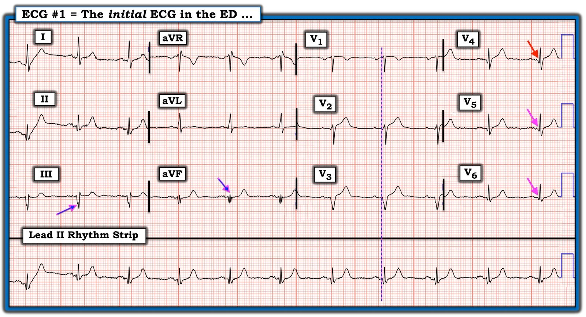
Những ĐIỂM Đáng chú ý từ Ca bệnh Hôm nay:
Tôi đã tìm thấy cả một kho ĐIỂM THEN CHỐT (PEARL) giảng dạy nằm trong bệnh sử và điện tâm đồ ban đầu của ca hôm nay. Bao gồm những điểm sau:
- Trước QOH (Queen Of Hearts) — tất cả các chương trình đọc điện tâm đồ bằng máy tính mà tôi từng gặp trong những thập kỷ gần đây đều tỏ ra vô dụng trong việc nhận ra sóng T tối cấp. Như đã xảy ra với bản ghi đầu tiên của ca hôm nay — thuật toán máy tính đã hoàn toàn bỏ sót các sóng T tối cấp hiện diện ở không dưới 8/12 chuyển đạo.
- Ở bệnh nhân có đau ngực mới xuất hiện này — tôi cho rằng sóng T là tối cấp ở các chuyển đạo II,III,aVF; và ở các chuyển đạo từ V2 đến V6. Tôi thấy dễ nhất là bắt đầu bằng việc xác định những sóng T chắc chắn “quá đầy đặn” (hypervoluminous) (tức là, Cao hơn và “Mập hơn” ở đỉnh, đồng thời cũng Rộng hơn ở chân so với mức lẽ ra phải có, xét theo biên độ sóng R ở chuyển đạo bạn đang xem). Ví dụ — không có gì phải nghi ngờ rằng sóng T ở các chuyển đạo II, aVF và V4 là “quá lớn”, vì biên độ sóng T ở các chuyển đạo này bằng hoặc vượt quá biên độ sóng R. Tương tự, xét theo các phức bộ QRS chủ yếu âm ở các chuyển đạo V2 và V3 — sóng T ở các chuyển đạo đó là “quá đồ sộ”. Suy rộng ra — sóng T có lẽ cũng tối cấp ở các chuyển đạo lân cận III, V5 và V6.
- Mặc dù “vị trí” của các sóng T tối cấp này ở 8/12 chuyển đạo là lan tỏa (tức là, bao phủ các vùng giải phẫu dưới-trước-bên) — bất kể động mạch “thủ phạm” rốt cuộc là động mạch nào (tức là, tắc LAD trên diện rộng và/hoặc kèm bệnh nhiều nhánh mạch vành) — các dấu hiệu trong ca hôm nay gồm đau ngực mới xuất hiện, kèm theo sóng T tối cấp ở nhiều chuyển đạo đã là chỉ định thông tim ngay.
Việc biết rằng nghiệm pháp gắng sức trước đây bình thường giúp ích NHƯ THẾ NÀO?
Chúng tôi được cho biết rằng không có điện tâm đồ cũ nào để so sánh tại thời điểm này của ca bệnh. Dù vậy — việc một nghiệm pháp gắng sức trước đây đã được thực hiện có nghĩa là hẳn đã phải có một hoặc nhiều điện tâm đồ trước đó của bệnh nhân này.
- Trong thời đại truyền tải internet tinh vi này — việc tiếp cận để xem lại một điện tâm đồ cũ lẽ ra không mất nhiều thời gian (từ bất kỳ cơ sở nào mà bệnh nhân đã đến làm nghiệm pháp gắng sức).
- Tuy nhiên, ngay cả khi không tiếp cận được điện tâm đồ cũ — việc bệnh nhân này chưa bao giờ được cho biết rằng ông có thể đã từng có một “biến cố” (nhồi máu) — cho chúng ta biết rằng sự mất sóng r sau các chuyển đạo V1,V2 trên điện tâm đồ #1 — cùng với sự xuất hiện một phức bộ QS rõ ràng ở chuyển đạo V3 — là những dấu hiệu mới xuất hiện (ít nhất là “mới” kể từ khi làm nghiệm pháp gắng sức trước đó). Đơn giản là không thể nào phức bộ QS ở chuyển đạo V3 này lại bị bỏ sót NẾU trước đây nó đã có trên một điện tâm đồ nền được ghi vào lúc bệnh nhân làm nghiệm pháp gắng sức trước đó. Điều này gợi ý mạnh mẽ rằng sự mất sóng r ở các chuyển đạo trước và phức bộ QS ở chuyển đạo V3 là một phần của bức tranh được “vẽ” nên trên bản ghi đầu tiên của ca hôm nay, trong đó có sóng T tối cấp ở 8/12 chuyển đạo của điện tâm đồ này từ một bệnh nhân có đau ngực mới xuất hiện.
CÁC ĐIỂM Đáng chú ý Khác trên điện tâm đồ #1:
- Nếu bạn nhìn vào 3 nhát bóp ở chuyển đạo II của điện tâm đồ 12 chuyển đạo trong Hình 1 — sóng ST-T ở nhát thứ 1 không thể diễn giải được do trôi đường nền và đoạn đi lên dốc đứng (không sinh lý) do nhiễu ở nhánh lên của sóng T. Các dao động nhấp nhô do nhiễu của đường nền giải thích cho sự thay đổi và không chắc chắn về hình dạng sóng ST-T ở 2 nhát còn lại trong chuyển đạo II của điện tâm đồ 12 chuyển đạo. Chúng ta thường quên nhìn vào dải nhịp chuyển đạo II dài ở cuối bản ghi — đó là một thiếu sót, vì thay vì chỉ có 3 nhát, có tới 11 nhát trong chuyển đạo II dài này — điều này rõ ràng sẽ cho chúng ta ý niệm tốt hơn nhiều về hình dạng sóng ST-T thực sự ở chuyển đạo này. Ngoài hiện tượng trôi đường nền và đoạn đi lên dốc đứng do nhiễu của sóng T thấy ở nhát thứ 1 của dải nhịp chuyển đạo II dài này — 10 nhát còn lại xác nhận rằng sóng T ở chuyển đạo II thực sự tối cấp (tức là, thực sự quá đầy đặn — và gần như cao bằng sóng R ở chuyển đạo này).
- Có phân mảnh rõ rệt ở các chuyển đạo III và aVF của điện tâm đồ #1 (tức là, Các mũi tên xanh-hồng chỉ vào chỗ khía rõ ràng của sóng S ở chuyển đạo III — cùng với một phức bộ đa pha rSr’s’r” ở chuyển đạo aVF). Kết hợp với một sóng Q rộng hơn mức lẽ ra phải có ở chuyển đạo II — sự phân mảnh quá mức này ở các chuyển đạo III và aVF rõ ràng cho thấy có “sẹo”, nhiều khả năng do bệnh mạch vành đáng kể và/hoặc nhồi máu vào một thời điểm nào đó.
- Lưu ý rằng tôi đã thêm đường thẳng đứng màu xanh-hồng ở các chuyển đạo ghi đồng thời V1,V2,V3 — để nhấn mạnh rằng phức bộ QRS ở chuyển đạo V2 thực ra bắt đầu bằng một sóng lệch âm nhỏ. Điều này có nghĩa là phức bộ QRS ở chuyển đạo V2 cũng “bị phân mảnh” — với hình ảnh một sóng q nhỏ — theo sau là một sóng r biên độ nhỏ — rồi đến một sóng S sâu — trong đó sự phân mảnh này chỉ điểm nhồi máu thành trước vào một thời điểm nào đó (có lẽ là “mới”, xét đến phức bộ QS thấy ở chuyển đạo V3).
- Cuối cùng — cần lưu ý rằng các sóng Q ở các chuyển đạo trước tim bên V4,V5,V6 có ý nghĩa chỉ điểm nhồi máu vào một thời điểm nào đó. Mặc dù các “sóng q vách bình thường” nhỏ có thể thường gặp ở các chuyển đạo bên (như các chuyển đạo V5,V6) — sóng Q ở chuyển đạo V4 (mũi tên ĐỎ) bình thường không bao giờ được lớn hơn các sóng q vách “bình thường” đôi khi có thể thấy ở các chuyển đạo V5,V6 — nhưng các mũi tên HỒNG chỉ các sóng q ở các chuyển đạo V5,V6 xác nhận rằng sóng Q lớn hơn ở chuyển đạo V4 là một sóng Q “nhồi máu”.
- T.B. (P.S.): Như bác sĩ Meyers đã nói — Sự chậm trễ quá mức trong ca hôm nay cho đến khi cuối cùng mới được thông tim, với lý do chẩn đoán là “NSTEMI” — là điều phi lý. Người ta không khỏi tự hỏi kết cục lâu dài lẽ ra có thể được cải thiện đến mức nào nếu những bài học của ca hôm nay đã được rút ra.